北九州市の純喫茶紹介
北九州市は人口が全国で一番減り続けており、お店も少なくなっています。 そこで減り続ける純喫茶文化と同じ境遇である北九州市の古き良き喫茶店をご紹介します。 お気に入りの純喫茶を見つけていただけると嬉しいです。
中にはアルコールを提供しているお店もありますが、純喫茶が減少している実態を知っていただきたいので紹介させていただきます。
喫茶リバー
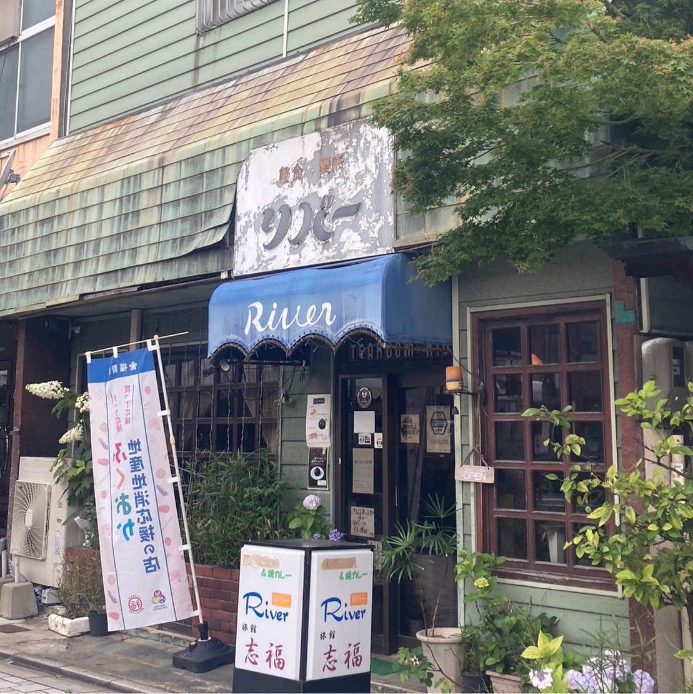 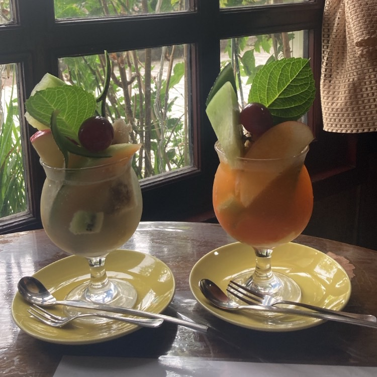門司港にある昭和感漂う純喫茶。650円のフルーツジュースは、フルーツがたくさん入っていてお得なのでおすすめです。
気さくなマスターがジュースの味をチョイスしてくれます。夕方には、売り切れになるだとか・・・。
住所：〒801-0852 福岡県北九州市門司区港町1-23
最寄り駅:門司港駅
電話番号：093-321-3204
営業時間：月~日 8時30分~17時00分
席：6卓ほど （カウンター席もあり）
駐車場：なし
備考：喫煙可能 おそらく現金のみ
このような方におすすめしたい！
・時間の余裕のある方
・おばあさんおじいさんが好きな方
・喫煙者
店主のおばあさん、又はおじいさんが丁寧にゆっくり料理を作っているため時間に余裕がある方
また、気軽に話しかけていただけるのでそういった交流が好きな方におすすめしたいです。
そして店内は喫煙できるため、喫煙者にとっても便利な純喫茶だと思います。
CAFE DE FAN FAN
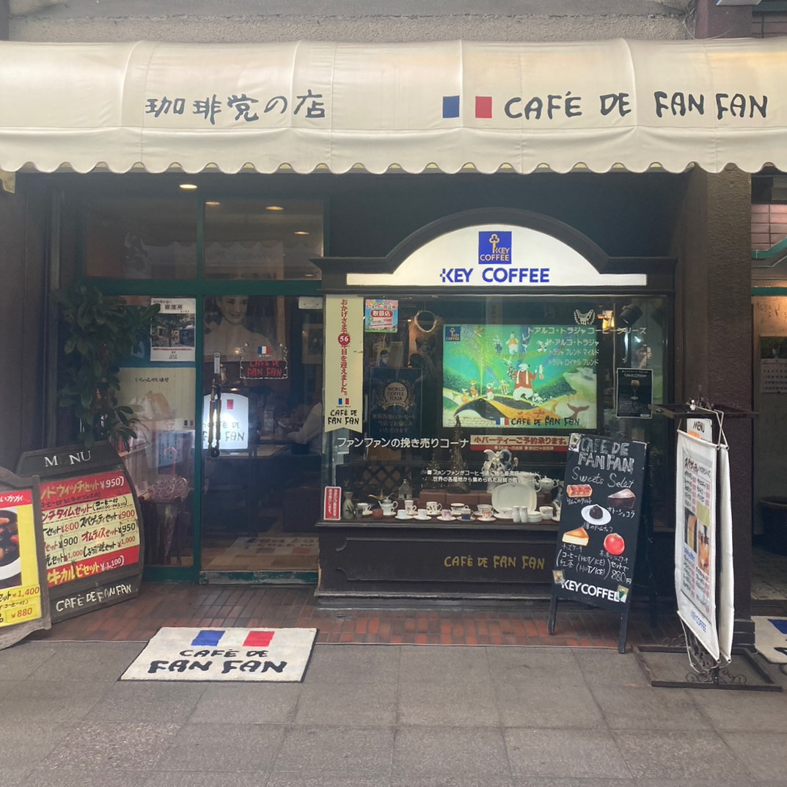 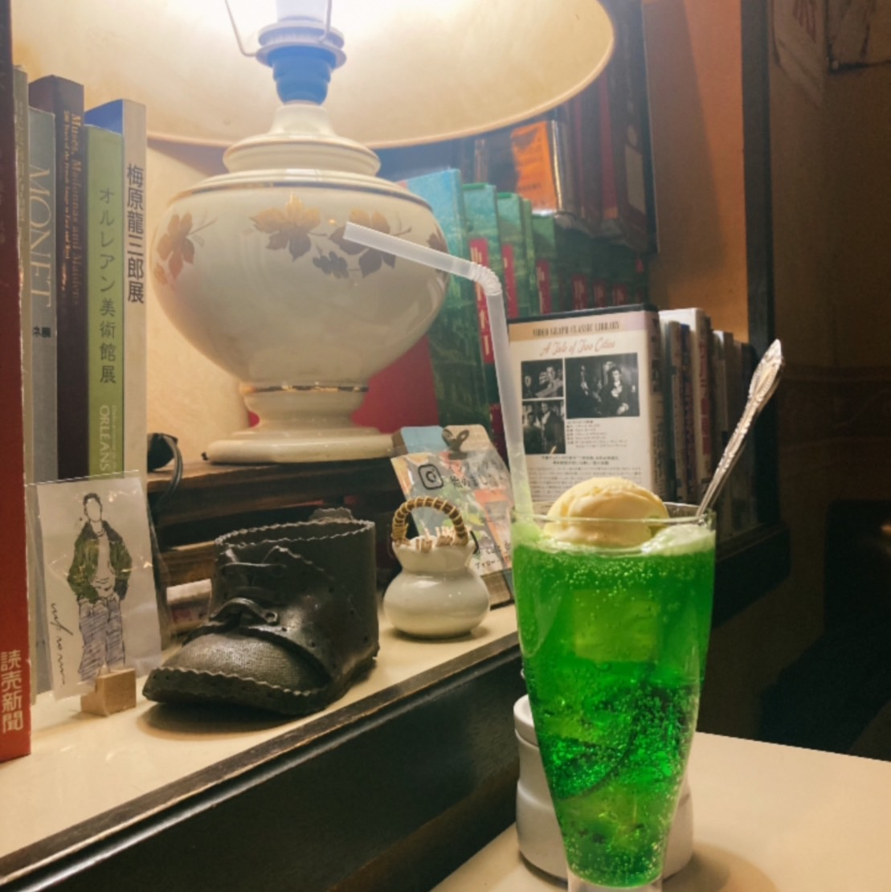1968年に創業された京町銀天街の中にある老舖の喫茶店。半世紀以上愛され続けています。
珈琲の種類が多いだけでなく、アンティーク調の店内で照明も落ち着いているので心地が良い空間です。
住所：〒802-0002 福岡県北九州小倉北区京町1-2-8
最寄り駅:小倉駅
電話番号：093-551-4817
営業時間：月~日 8時00分~20時00分（モーニング11時まで。ランチは11時から15時。）
席：10卓ほど （カウンター席もあり）
駐車場：なし
備考：中庭のみ喫煙可能 現金のみ 定休日は1月1日のみ
このような方におすすめしたい！
・ゆっくり過ごしたい方
・珈琲が好きな方
・喫煙者
すごく落ち着いた空間で、慌ただしくないのでゆっくり過ごしたい方にはおすすめです。
また、珈琲の種類も多いため珈琲好きにとっては溜まらないと思います。
そして中庭では喫煙可能なので、喫煙者にとっても優しい純喫茶です。
グリーングラス
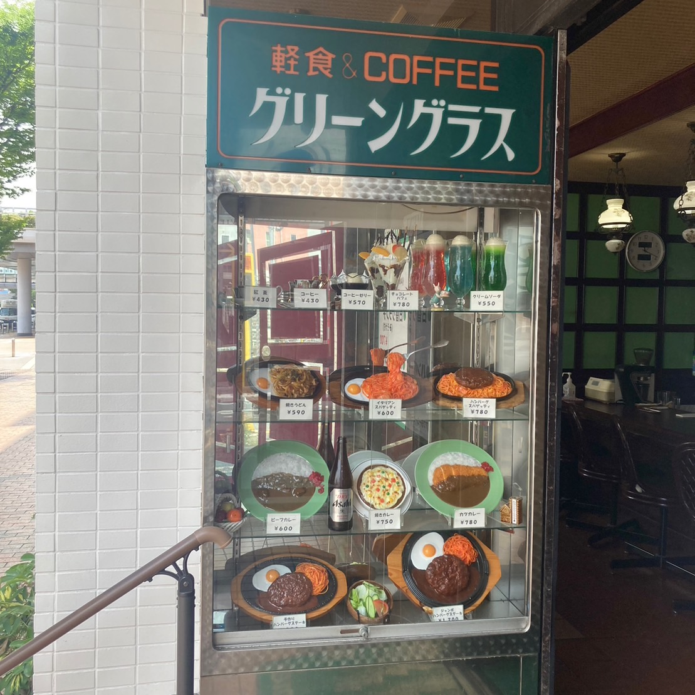 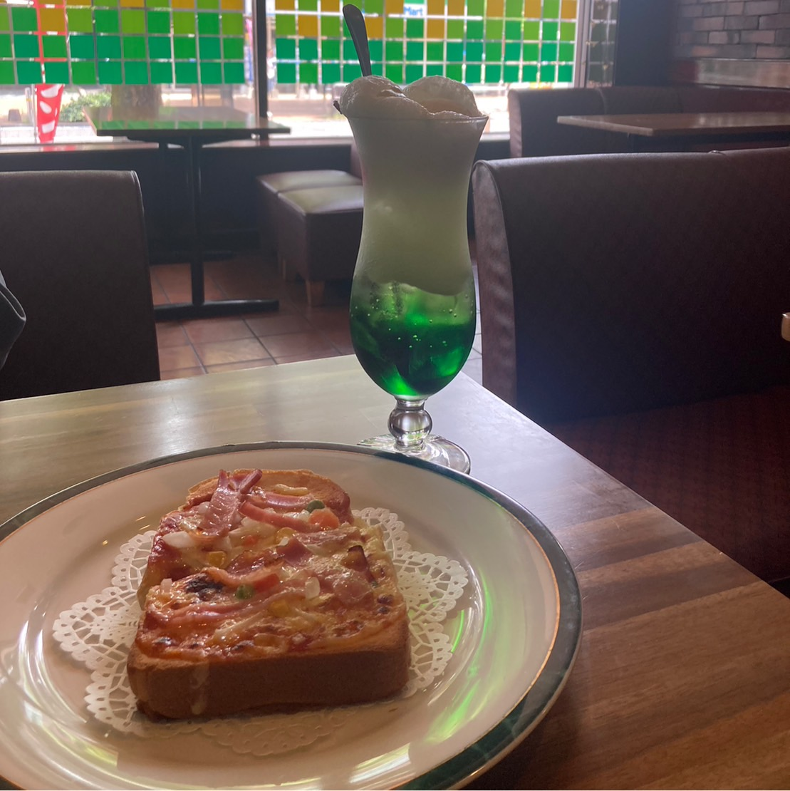小倉駅北口側から歩いてすぐにある1975年に創業し40年以上続く喫茶店。
ハンバーグスパゲッティ（750円）はボリュームがあって味もおいしくリピーターが多いだとか・・・。
住所：〒802-0001 福岡県北九州市小倉北区浅野1-2-6
最寄り駅:小倉駅
電話番号：093-511-4697
営業時間：月~日 8時00分~20時00分
席：6卓ほど（カウンター席もあり）
駐車場：なし
備考：全席禁煙 現金のみ
このような方におすすめしたい！
・一人で行動しにくい方
・ゆっくりとした時間を楽しみたい方
お店の方が大変親切で、気にかけてくださるので一人で入りにくいといった方には難易度が低くておすすめです。
また、落ち着いた空間で、軽食からデザートまで種類が豊富なのでゆっくり過ごしたい方にもおすすめです。
琥珀
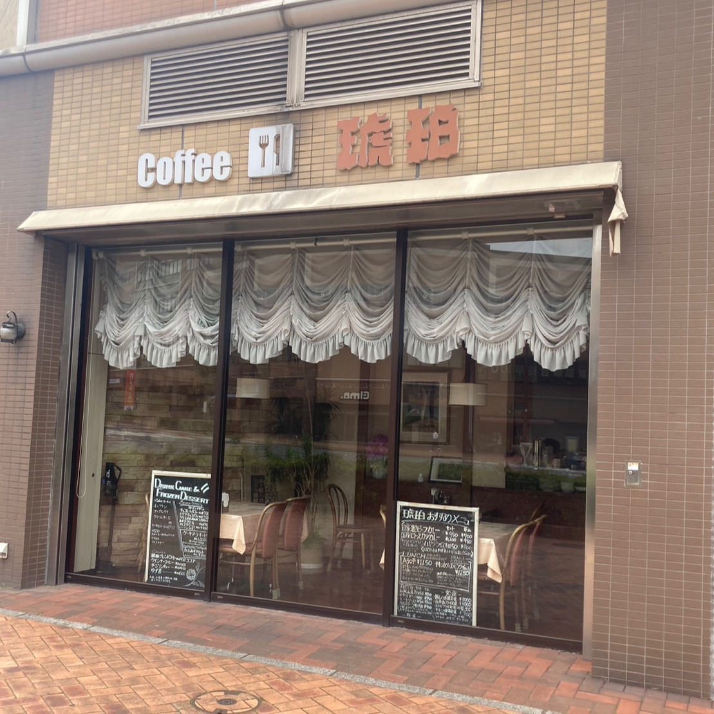 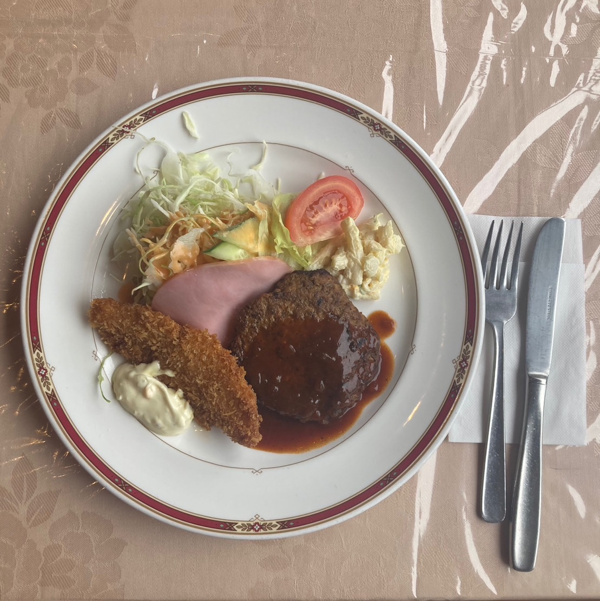1959年に創業の60年以上に渡り、八幡で愛される喫茶店。店内はシックで昭和レトロな雰囲気です。
メニューも豊富で、1050円のAランチはサラダや飲み物、スープがついてくるのでおすすめです。
住所：〒805-0061 福岡県北九州市八幡東区 西本町4-1-1 サワラガーデンモール一番街
最寄り駅:八幡駅
電話番号：093-671-6293
営業時間：月~日 11時00分~17時00分
席：10卓ほど
駐車場：なし
備考： 禁煙 現金のみ 駐車場あり
このような方におすすめしたい！
・ゆったりとした時間を過ごしたい方
・ちょっぴり贅沢をしたい方
店内では、パソコンやタブレット端末、スマホ電話等の使用を遠慮しているため、ゆったりとした空間を味わうことができます。
ランチコースを頼むとメイン料理にサラダやスープ、ドリンクがついてくるのでちょっぴり贅沢したい方におすすめです。
喫茶 紫留来
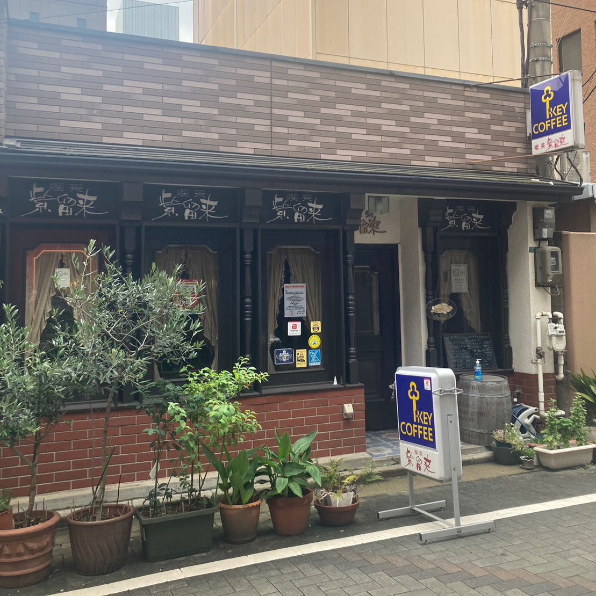 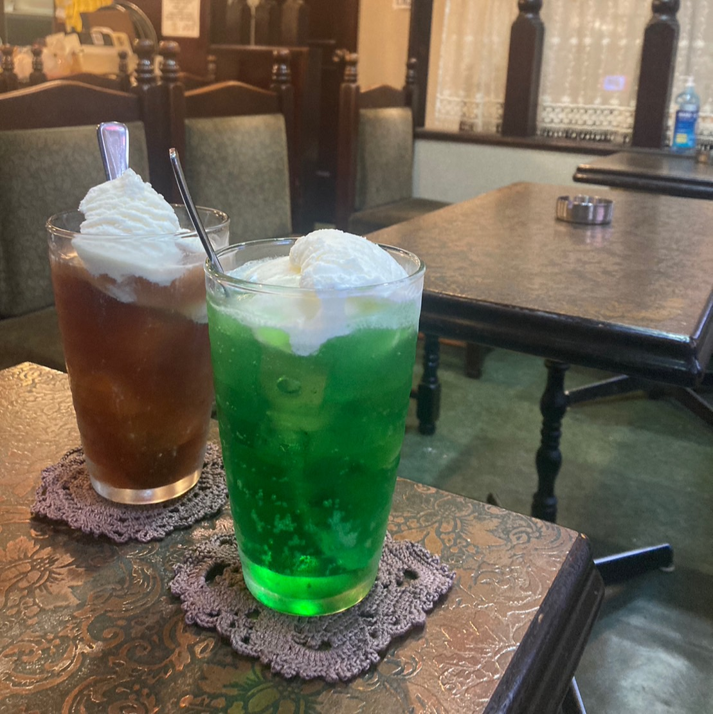看板犬のモカちゃんが出迎えてくれ、自家製焙煎の珈琲を楽しめる喫茶店です。
お値段もリーズナブルで、店内もノスタルジーな雰囲気なのですごく居心地がいいです。
住所：〒802-0003 福岡県北九州市小倉北区米町1-2-5
最寄り駅:小倉駅
電話番号：093-531-4818
営業時間：月~金 10時00分~18時00分 土曜日12時00分~17地00分 日曜日は定休日
席：4卓ほど（カウンター席もあり）
駐車場：なし
備考：喫煙可能 現金 クレジット払い可能
このような方におすすめしたい！
・動物が好きな方
・珈琲が好きな方
・喫煙者
看板犬のモカちゃんがいるので、動物好きには溜まらない純喫茶だと思います。
ネルドリップで淹れるオリジナル珈琲があるので、珈琲好きにもおすすめです。
そして喫煙可能なので、喫煙者にとっても利用しやすい純喫茶です。
ドン珈琲館
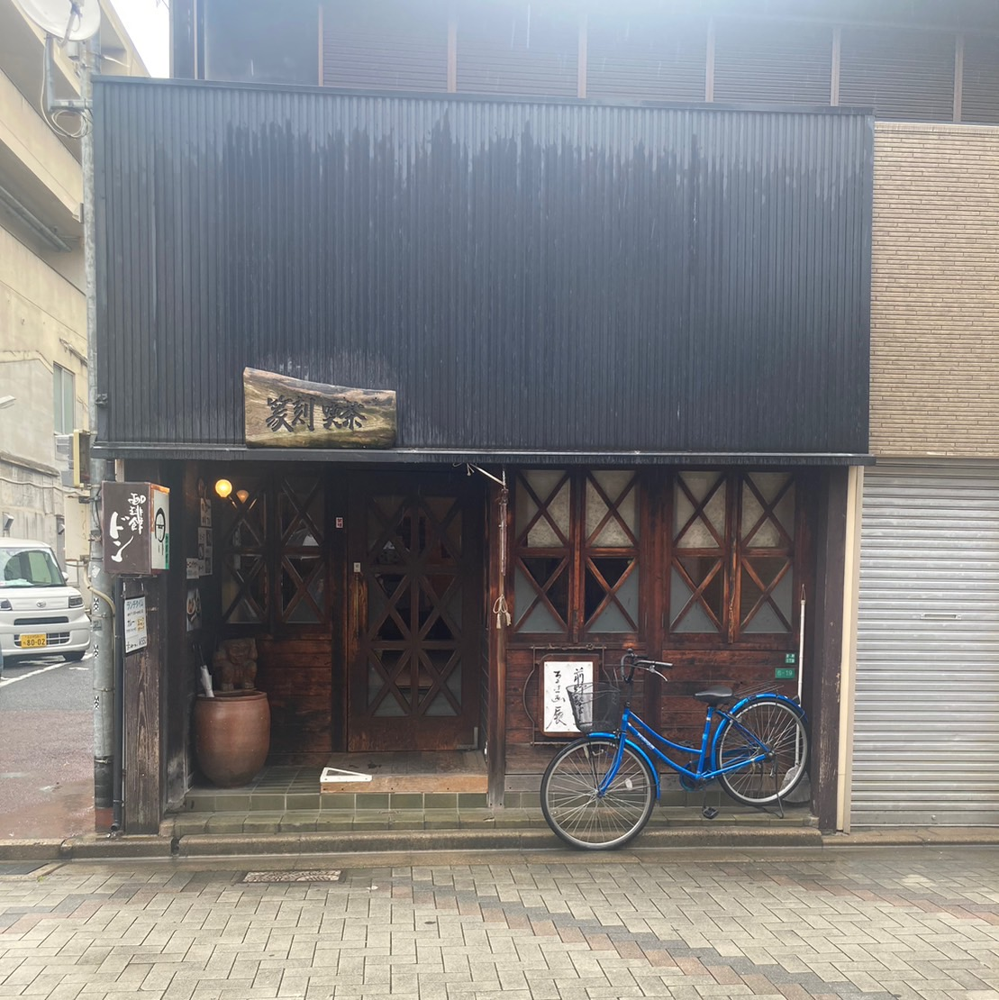 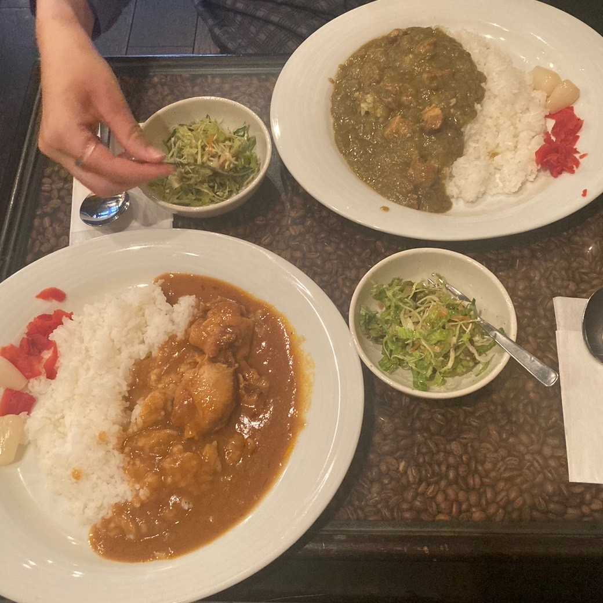気さくなマスターとインコの弥太郎が出迎えてくれる老舗喫茶。陶器や絵画が展示されている落ち着く空間です。
ランチのカレーは、サラダと珈琲がついて550円でお得。珈琲が苦手な人でも飲みやすいのでおすすめです。
住所：〒802-0002 福岡県北九州市小倉北区京町3-6-19 ドン珈琲館
最寄り駅:小倉駅
電話番号：093-522-6593
営業時間：月~土 8時00分~18地00分 日曜日は定休日
席：4卓ほど （カウンター席あり）
駐車場：なし
備考：禁煙 現金のみ
このような方におすすめしたい！
・動物が好きな方
・珈琲が苦手な方
・お喋りが好きな方
店内には、「ワン」と鳴くインコの弥太郎君がいるので動物好きには溜まらない純喫茶です。
珈琲も比較的飲みやすいので、珈琲が苦手で普段飲まない人にもおすすめです。
そしてマスターがとても気さくで、気軽に話しかけてくださるのでお喋りが好きな方にもおすすめしたいです。
六曜館
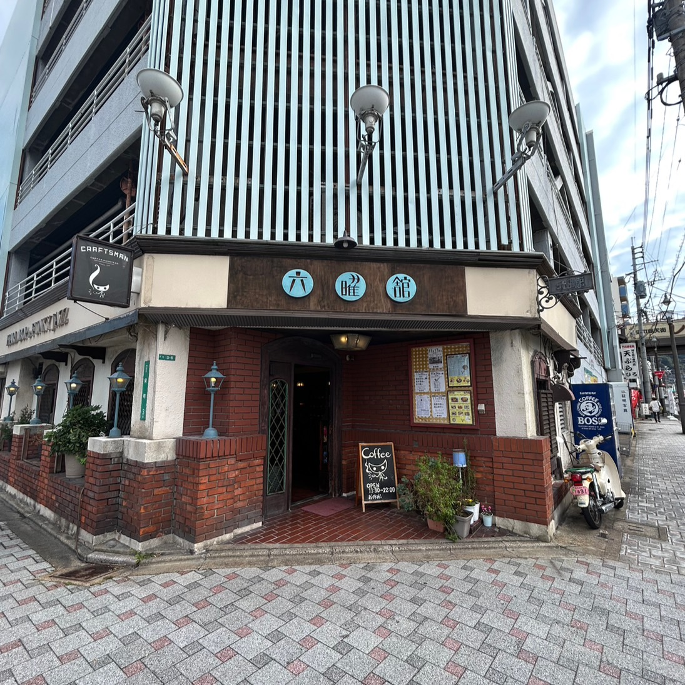 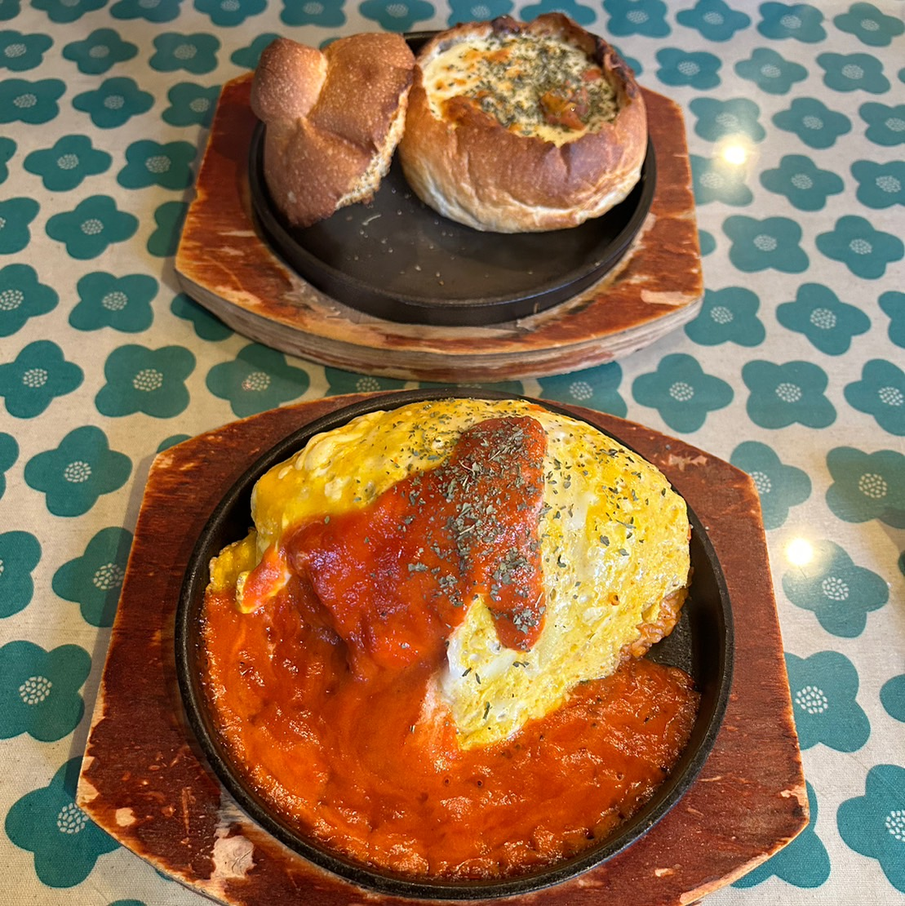門司港で昭和から続くレトロ喫茶店です。一旦は、閉業してしまいましたが復活してほしいという声が多数あがったことから、復活した地元の方に愛され続けています。
また、奥にはライブステージがあり、生のジャズ演奏を聴きながらお食事を楽しむことができます。
住所：〒801-0863 福岡県北九州市門司区栄町3-5/p>
最寄り駅:門司港駅
電話番号：080-3224-5227
営業時間：11時30分~22時00分（火・水は定休日）
席：6卓ほど （カウンター席もあり）
駐車場：なし（近くにコインパーキング多数あり）
備考：禁煙（外に喫煙スペースあり）貸切可能 現金のみ
このような方におすすめしたい！
・ゆっくり過ごしたい方
・ジャズが好きな方
どこかすごく懐かしく落ち着いた空間で、慌ただしくないのでゆっくり過ごしたい方にはおすすめです。
また、店内にはジャズが流れており、奥のライブステージで生演奏を聴ける時もあるので、音楽好きな方に是非行っていただきたいです。
アンティーク喫茶 弁・弁
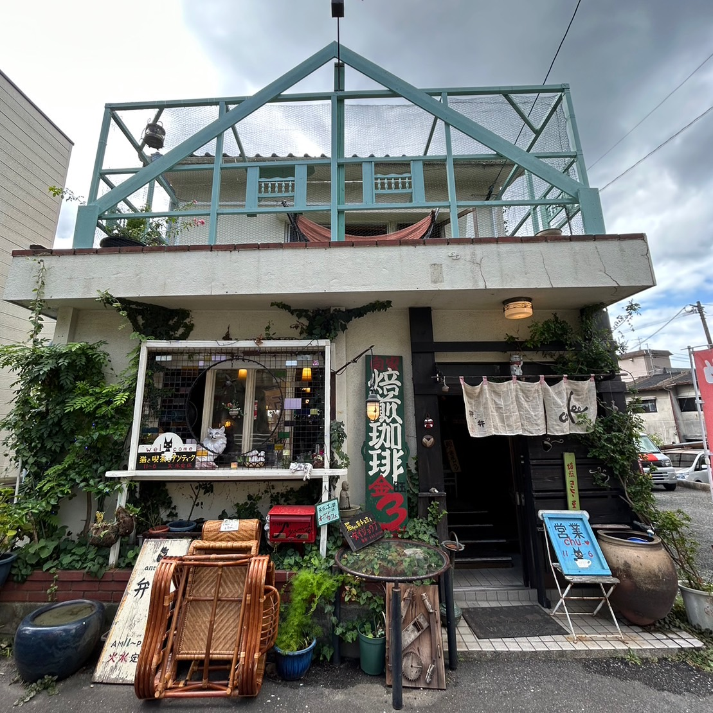 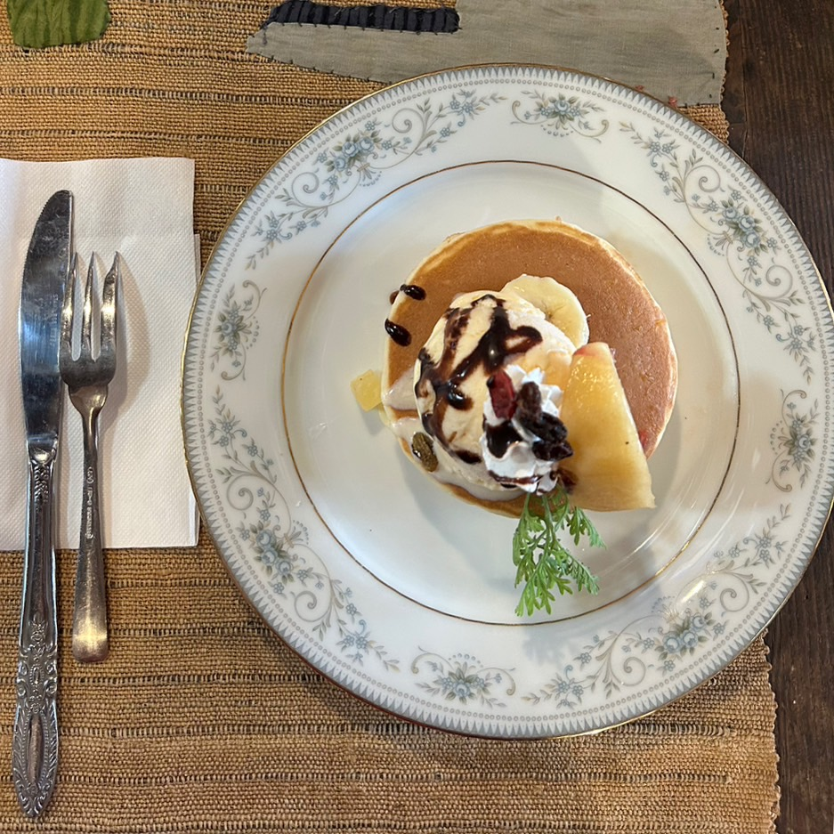沢山の猫と親切なマスターが迎えてくれる喫茶店です。店内には、6匹の人懐っこい猫と昔懐かしいアンティーク雑貨が溢れていて、その場にいるだけでワクワクします。
更にお店の二階には、古くて江戸期のものから残された珍しい人形が展示されているギャラリーがあり歴史を感じることができます。焙煎珈琲を飲めるだけでなく空間も楽しむことができるので、おすすめです。
住所：〒801-0862 福岡県北九州市門司区錦町12-8
最寄り駅:出光美術館駅
電話番号：093-331-5144
営業時間：月~日 11時00分~18時00分（火曜日は定休日）
席：5卓ほど
駐車場：あり
備考：禁煙 現金のみ
このような方におすすめしたい！
・動物が好きな方
・珈琲が好きな方
・アンティーク雑貨が好きな方
・交流が好きな方
沢山の猫ちゃんが出迎えてくれるので、動物好きにはたまらない純喫茶です。
また、店内はアンティーク雑貨が溢れているので、そういった物が好きな方に是非行っていただきたいです。
焙煎珈琲も香り高くて飲みやすいので、珈琲好きな方におすすめです。
マスターも気さくに話しかけてくださり、とても親切なので交流が好きな方にもお勧めしたいです。
VIVO
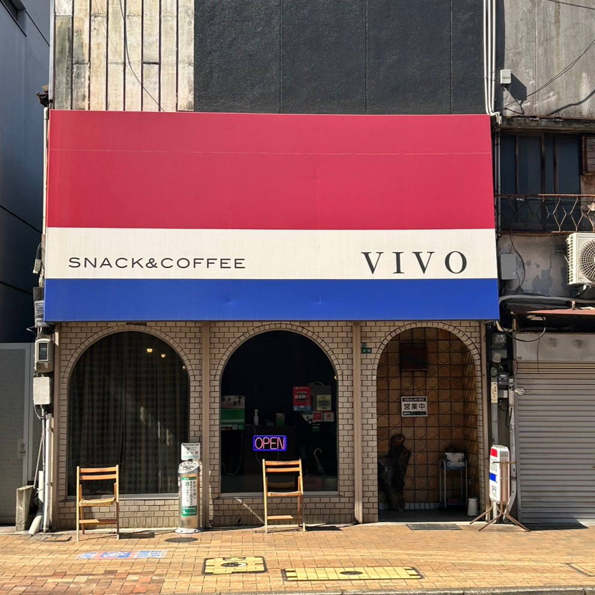 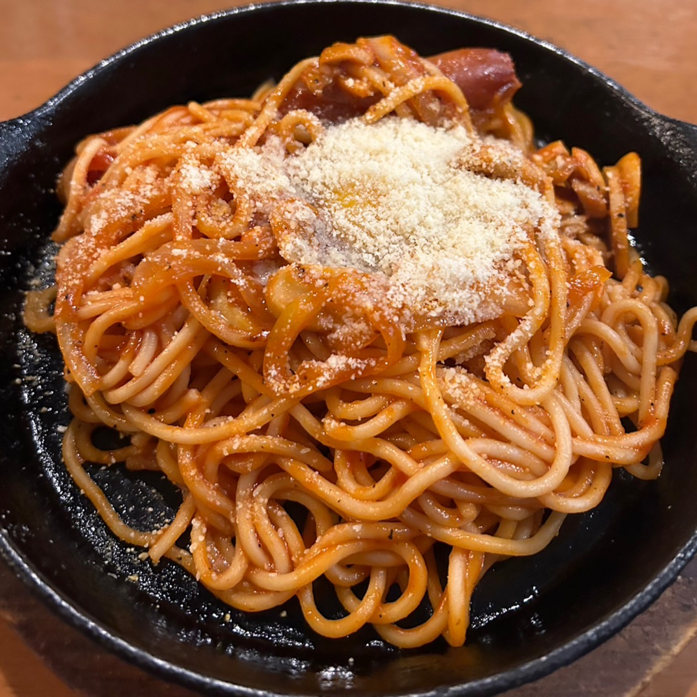クラシックが流れる昭和の香り漂う喫茶店。昼時は、サラリーマンが若者で多く賑わっていますが、回転率が速いので直ぐに料理が食べられます。
価格は比較的安く、味も美味しく、そして何より料理のボリュームも多いため、とりあえず入ってみることをおすすめします。。
住所：〒803-0812 福岡県北九州市小倉北区室町2丁目6-15
最寄り駅:西小倉駅
電話番号：093-571-5641
営業時間：月~土 10時00分~15時00分 17時00分~21時00分 （日曜日は定休日）
席：６卓（カウンター席もあり）
駐車場：なし（周辺にコインパーキングあり）
備考：禁煙 現金・PayPay可
このような方におすすめしたい！
・ガッツリ食べたい方
・時間があまりない方
お昼時は混んでいてすぐ満席になりますが、回転率が速く注文した料理が直ぐに届くので時間があまりない方にもお勧めです。
リーズナブルな値段で量が多くコスパがいいので、ガッツリ食べたい方に是非足を運んでいただきたいです。